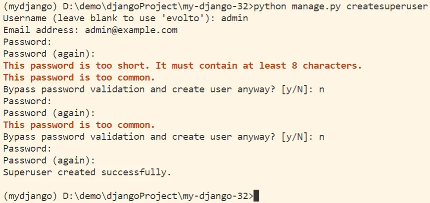

02 Django 官网示例¶
前言¶
1 创建并运行项目¶
1.1 创建项目¶
1.1.1 创建 mysite 目录¶
django-admin startproject mysite
{kind=link}
1.1.2 目录结构展示¶
{kind=link}
【注：官网原文】最外层的 mysite/ 根目录只是你项目的容器， 根目录名称对 Django 没有影响，你可以将它重命名为任何你喜欢的名称。
1.1.3 runserver 首次运行项目¶
切入到 mysite 文件夹内
cd mysite
runserver 运行
python manage.py runserver
{kind=link}
【注：官网原文】忽略有关未应用最新数据库迁移的警告，稍后我们处理数据库，另外，ctrl+C 可以停止项目运行。
1.2 创建应用¶
创建 polls 应用
python manage.py startapp polls
polls 应用目录结构
{kind=link}
1.3 编写应用视图¶
polls/views.py 中
from django.http import HttpResponse
def index(request):
return HttpResponse("Hello, world. You're at the polls index.")
新建 polls/urls.py 并输入
from django.urls import path
from . import views
urlpatterns = [
path('', views.index, name='index'),
]
mysite/urls.py 中
from django.contrib import admin
from django.urls import include, path
urlpatterns = [
path('polls/', include('polls.urls')),
path('admin/', admin.site.urls),
]
启动项目
python manage.py runserver
- 若访问地址：
http://127.0.0.1:8000/则会因地址错误，出现以下页面，此界面只会在开发模式中 Debug 为 True 时出现。
{kind=link}
- 若访问正确地址：
http://127.0.0.1:8000/polls/则会显示如下界面。
{kind=link}
【注】：此时由于未进行数据库迁移操作，所以在运行时还是会报错，接下来我们会对此进行处理。
{kind=link}
2 创建数据库与模型¶
2.1 Django 数据库配置¶
2.2 Django 数据模型¶
2.2.1 数据库迁移¶
因为项目中默认开启的某些应用的运行需要至少一个数据表，所以在使用它们前需要先创建一些表，否则就会报出上文出现的错误。
python manage.py migrate
{kind=link}
2.2.2 创建模型¶
polls/models.py
# 导入标准 时间 模块
import datetime
from django.db import models
# 导入 Django 时区相关的工具模块
from django.utils import timezone
class Question(models.Model):
question_text = models.CharField(max_length=200)
pub_date = models.DateTimeField('date published')
# 对象字符串化
def __str__(self):
return self.question_text
def was_published_recently(self):
return self.pub_date >= timezone.now()-datetime.timedelta(days=1)
class Choice(models.Model):
question = models.ForeignKey(Question, on_delete=models.CASCADE)
choice_text = models.CharField(max_length=200)
votes = models.IntegerField(default=0)
# 对象字符串化
def __str__(self):
return self.choice_text
- 常用字段名
| 字段名 | 参数 | 描述 |
|---|---|---|
| CharField | max_length=200 | 字符字段，最大长度为 200 |
| DateTimeField | 时间字段 | |
| IntegerField | default=0 | 整数字段，默认值是 0 |
- ForeignKey 外键：建立 Choice 类和 Question 类之间的关联关系。
2.2.3 激活模型¶
- 添加 app 的点式路径
mysite/settings.py
INSTALLED_APPS = [
'polls.apps.PollsConfig',
... # 原有的自动生成代码
]
【注：】INSTALLED_APPS 中不需要的应用在进行迁移前，可以自行注释或删除。
终端：安装 polls 应用
python manage.py makemigrations polls
{kind=link}
终端：再次进行数据迁移
python manage.py migrate
【重点：官网原文】每次改变模型 都需要 以下三步：
- 编辑
models.py文件，改变模型。 - 运行
python manage.py makemigrations为模型的改变生成迁移文件。 - 运行
python manage.py migrate来应用数据库迁移。
3 Django 管理页面¶
3.1 创建管理员账号¶
终端：创建管理员
python manage.py createsuperuser
后续输入用户名、邮箱、密码即可。 
{kind=link}
【注：】
- 在 cmd 中，键入的密码是不显示
- 此时会进行密码检查，过于简单或长度小于 8 个字符都会报错，也可以直接键入 y 确认
- 这里我们设置管理员用户名为
admin，密码为qwer123456
终端：修改 admin 管理员账号密码
python manage.py changepassword admin
3.2 启动开发服务器¶
终端：启动项目
python manage.py runserver
- 管理员登录界面
{kind=link}
- 管理员站点界面
{kind=link}
此时，我们可以看到，这里全是纯英文内容，为了方便起见我们改为中文显示。
mysite/setting.py
先找到对应的语言设置 LANGUAGE_CODE 以及时区设置 TIME_ZONE 然后将其修改为：
# 使用中文显示
LANGUAGE_CODE = 'zh-Hans'
# 修改时区为上海时间
TIME_ZONE = 'Asia/Shanghai'
- 此时保持运行状态，刷新页面即可
{kind=link}
3.3 向管理页加入投票应用¶
向管理页面注册问题 Question 类，以此来为 Question 提供后台管理接口。
polls/admin.py
from django.contrib import admin
from .models import Question
admin.site.register(Question)
- 界面展示
{kind=link}
4 创建公用界面¶
4.1 添加多个视图¶
向 polls 应用中添加能够接收参数的视图函数。
polls/views.py
def detail(request, question_id):
return HttpResponse("You're looking at question %s." % question_id)
def results(request, question_id):
response = "You're looking at the results of question %s."
return HttpResponse(response % question_id)
def vote(request, question_id):
return HttpResponse("You're voting on question %s." % question_id)
添加 url() 函数调用视图函数。
polls/urls.py
urlpatterns = [
# ex: /polls/
path('', views.index, name='index'),
# ex: /polls/5/
path('<int:question_id>/', views.detail, name='detail'),
# ex: /polls/5/results/
path('<int:question_id>/results/', views.results, name='results'),
# ex: /polls/5/vote/
path('<int:question_id>/vote/', views.vote, name='vote'),
]
<数据转换的数据类型:定义好的模式名/参数名>- 如
<int:question_id>即为：将输入的question_id参数转换为整数类型
4.2 修改首页视图¶
创建应用的
templates模板
{kind=link}
polls/templates/polls/index.html
<!DOCTYPE html>
<html lang="zh">
<head>
<meta charset="UTF-8" />
<title>投票 - 首页</title>
</head>
<body>
{% if latest_question_list %}
<ul>
{% for question in latest_question_list %}
<li>
<a href="/polls/{{ question.id }}/">{{ question.question_text }}</a>
</li>
{% endfor %}
</ul>
{% else %}
<p>No polls are available.</p>
{% endif %}
</body>
</html>
载入上述模板文件内容，并向其传递字典对象的上下文。
polls/views.py
from django.http import HttpResponse
from django.template import loader
from .models import Question
def index(request):
latest_question_list = Question.objects.order_by('-pub_date')[:5]
template = loader.get_template('polls/index.html')
context = {
'latest_question_list': latest_question_list,
}
return HttpResponse(template.render(context, request))
# Leave the rest of the views (detail, results, vote) unchanged
使用快捷函数 render() 重构 index() 视图。
polls/views.py
from django.http import HttpResponse
from django.shortcuts import render
from .models import Question
def index(request):
latest_question_list = Question.objects.order_by('-pub_date')[:5]
context = {'latest_question_list': latest_question_list}
return render(request, 'polls/index.html', context)
# ...
4.3 修改详情视图¶
4.3.1 抛出 404 错误¶
polls/views.py
from django.http import HttpResponse, Http404
from django.shortcuts import render
from .models import Question
# ...
def detail(request, question_id):
try:
question = Question.objects.get(pk=question_id)
except Question.DoesNotExist:
raise Http404("Question does not exist")
return render(request, 'polls/detail.html', {'question': question})
# ...
使用快捷函数 get_object_or_404() 重构 detail() 视图。
polls/views.py
from django.http import HttpResponse
from django.shortcuts import render, get_object_or_404
from .models import Question
# ...
def detail(request, question_id):
question = get_object_or_404(Question, pk=question_id)
return render(request, 'polls/detail.html', {'question': question})
# ...
4.3.2 修改模板¶
polls/templates/polls/detail.html
<!DOCTYPE html>
<html lang="zh">
<head>
<meta charset="UTF-8" />
<title>投票 - 详情</title>
</head>
<body>
<h1>{{ question.question_text }}</h1>
<ul>
{% for choice in question.choice_set.all %}
<li>{{ choice.choice_text }}</li>
{% endfor %}
</ul>
</body>
</html>
4.4 去除模板中的硬编码 URL¶
对首页模板的 a 标签链接进行修改。
polls/templates/polls/index.html
<a href="{% url 'detail' question.id %}"> {{ question.question_text }} </a>
4.5 为 URL 名称添加命名空间¶
为了防止以后出现同名 URL 冲突，我们可以在 polls/urls.py 中加上 app_name = 'polls' 设置命名空间。
polls/urls.py
# ...
app_name = 'polls'
urlpatterns = [
# ...
]
polls/templates/polls/index.html
<a href="{% url 'polls:detail' question.id %}">
{{ question.question_text }}
</a>
5 详情页的表单处理¶
5.1 编写表单¶
polls/templates/polls/detail.html
<form action="{% url 'polls:vote' question.id %}" method="post">
{% csrf_token %}
<fieldset>
<legend><h1>{{ question.question_text }}</h1></legend>
{% if error_message %}
<p><strong>{{ error_message }}</strong></p>
{% endif %} {% for choice in question.choice_set.all %}
<input
type="radio"
name="choice"
id="choice{{ forloop.counter }}"
value="{{ choice.id }}"
/>
<label for="choice{{ forloop.counter }}">{{ choice.choice_text }}</label
><br />
{% endfor %}
</fieldset>
<input type="submit" value="Vote" />
</form>
polls/views.py
from django.http import HttpResponse, HttpResponseRedirect
from django.shortcuts import render, get_object_or_404
from django.urls import reverse
from .models import Choice, Question
# ...
def vote(request, question_id):
question = get_object_or_404(Question, pk=question_id)
try:
selected_choice = question.choice_set.get(pk=request.POST['choice'])
except (KeyError, Choice.DoesNotExist):
# Redisplay the question voting form.
# 重新显示问题投票表单
return render(request, 'polls/detail.html', {
'question': question,
'error_message': "You didn't select a choice.",
})
else:
selected_choice.votes += 1
selected_choice.save()
# Always return an HttpResponseRedirect after successfully dealing
# with POST data. This prevents data from being posted twice if a
# user hits the Back button.
# 在成功处理 POST 数据后总是返回一个 HttpResponseRedirect,这可以防止用户点击后退按钮时数据被两次发布。
return HttpResponseRedirect(reverse('polls:results', args=(question.id,)))
上一节：01 Django 开发环境配置
创建日期: 2026-03-21
作者: